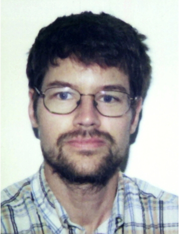
Pierre-Antoine Absil
UCLouvain
PhD · from 1998
Interactions, Control and Events
This one-day workshop brings together Rodolphe’s former doctoral students and postdoctoral researchers to discuss new directions in systems and control, and to celebrate his 60th birthday. The programme follows the successive generations of his research community.
Provisional list · invitations and attendance are not yet confirmed.

UCLouvain
PhD · from 1998
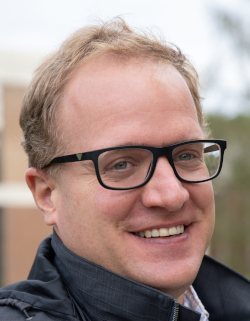
UCLouvain
PhD · from 2002
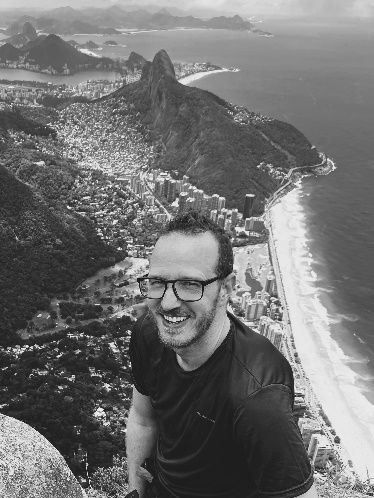
Epslog
PhD · from 2003
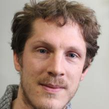
Inria, Quantic team
PhD · from 2005
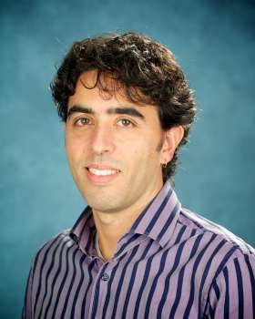
University of Toronto
Postdoc · from 2005
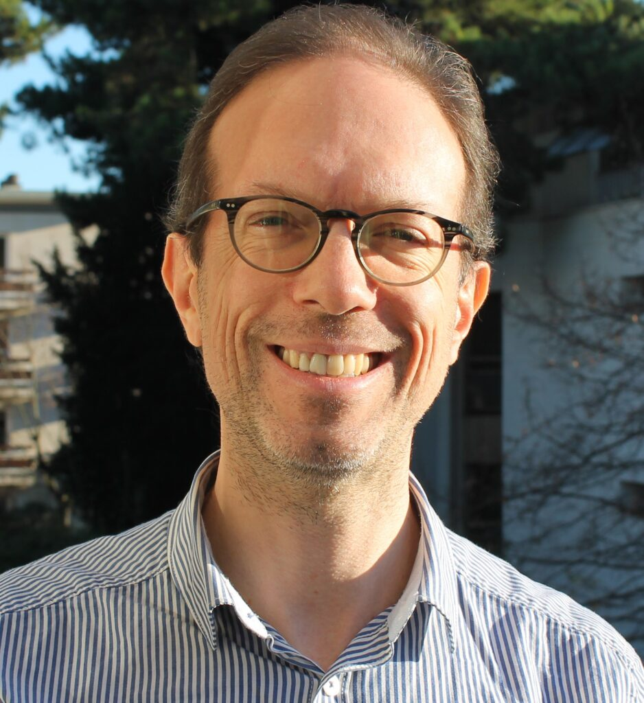
Mines Paris – PSL
Postdoc · from 2007
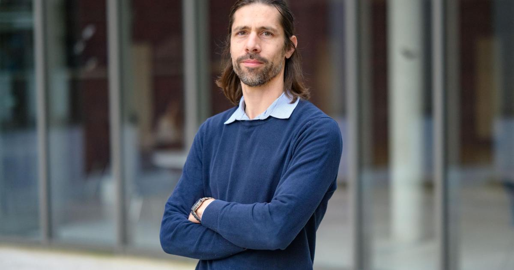
University of Namur
PhD · from 2007
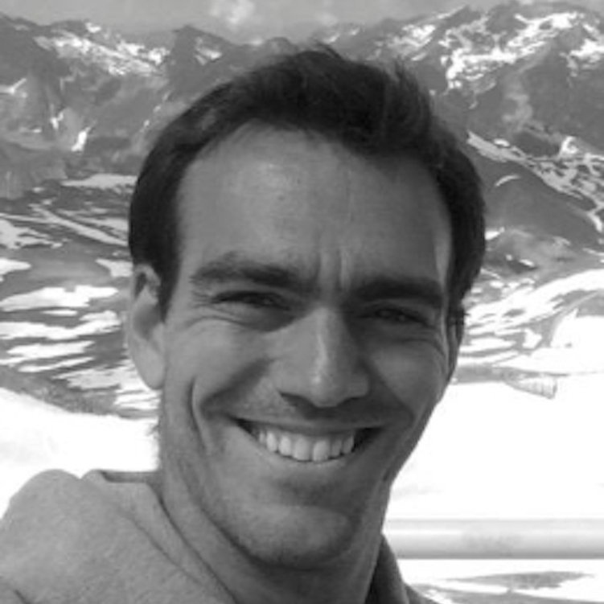
University of Liège
PhD · from 2008
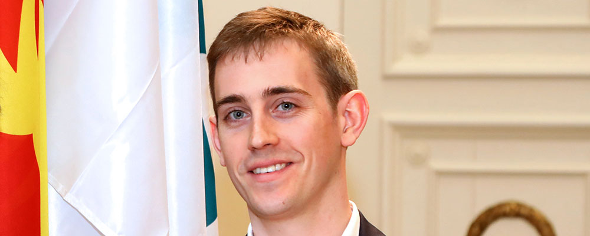
University of Liège
PhD · from 2008
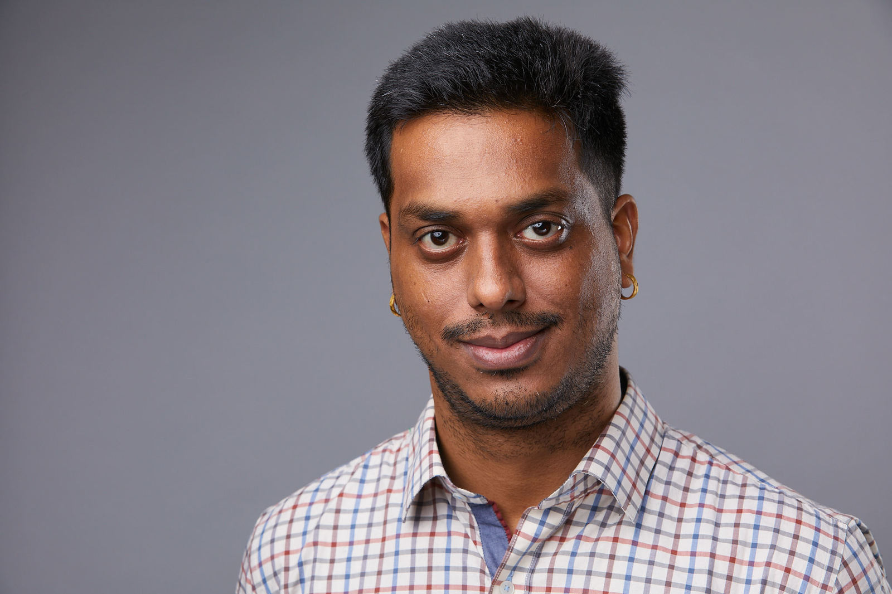
Microsoft
PhD · from 2010
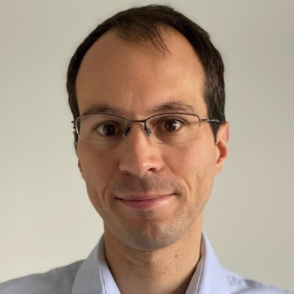
University of Cambridge
Postdoc · from 2011
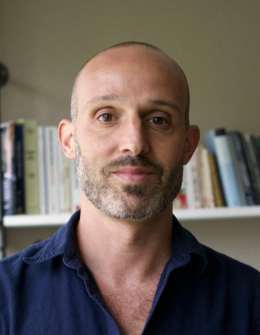
University of Liège; WEL Research Institute
Postdoc · from 2012
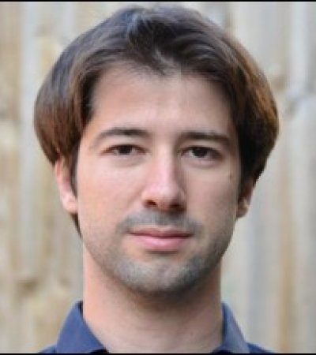
University of Cambridge
PhD · from 2015
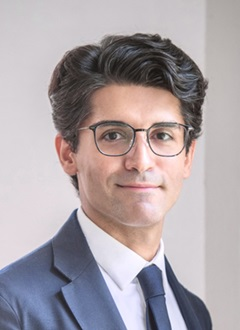
Nanyang Technological University, Singapore
PhD · from 2015
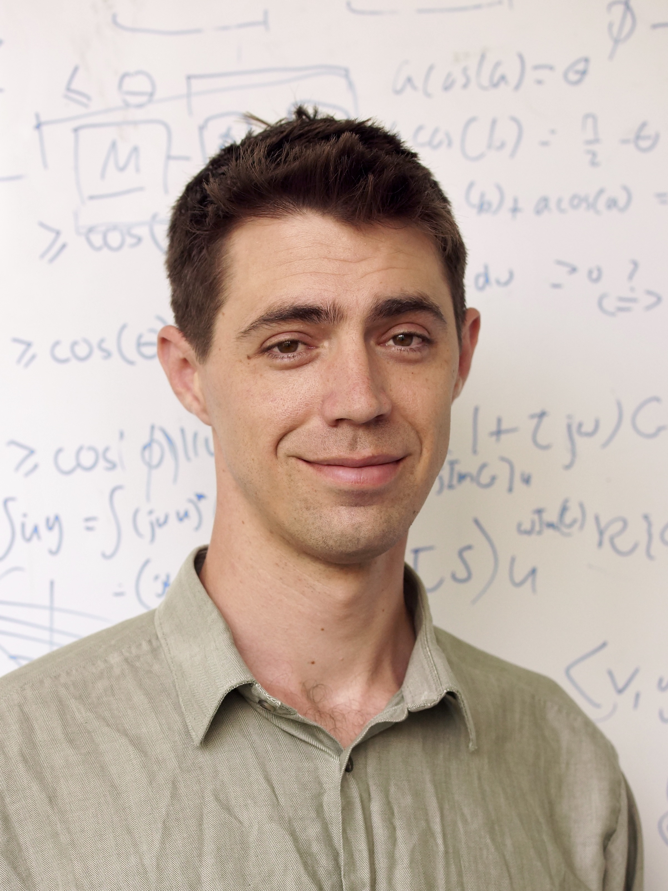
University of Sydney
PhD · from 2018
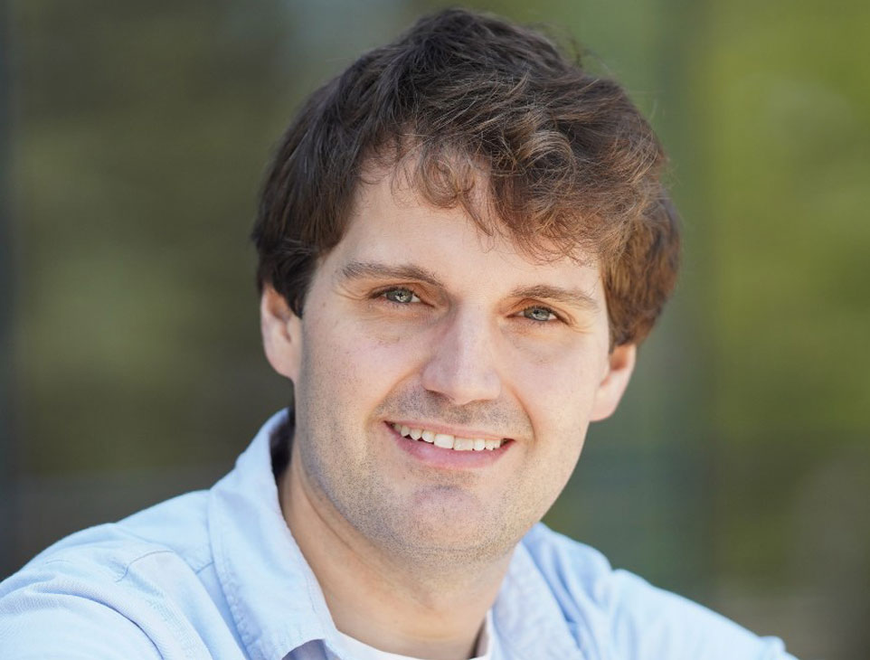
Technion – Israel Institute of Technology
Postdoc · from 2018
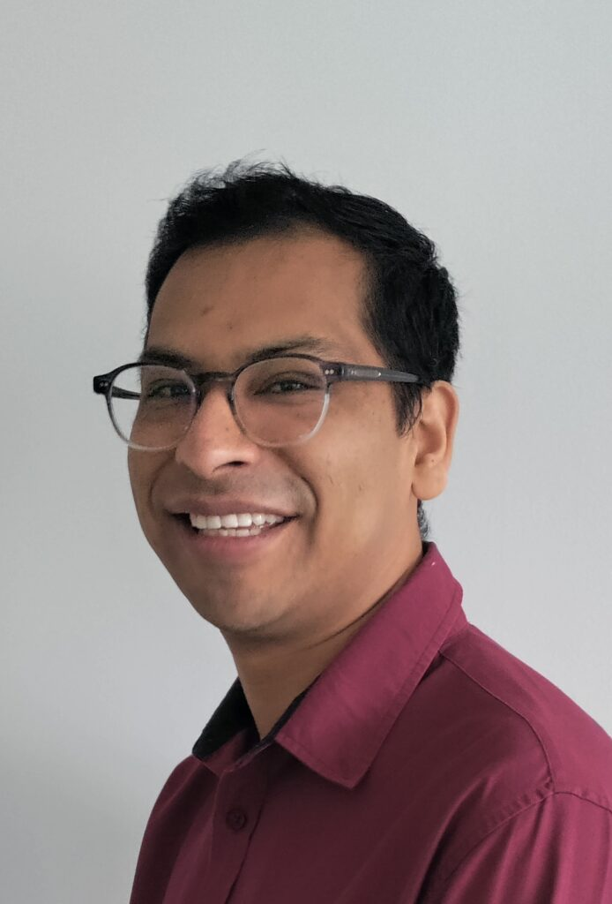
Inria Centre at Université Grenoble Alpes
Postdoc · from 2018
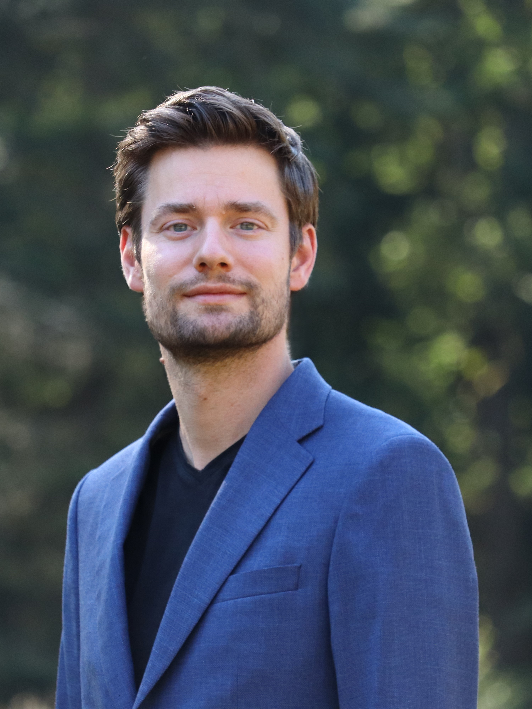
University of Groningen
Postdoc · from 2020
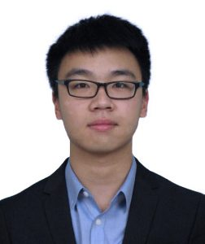
University of Manchester
Postdoc · from 2023
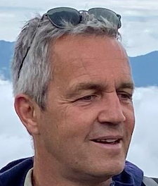
KU Leuven
Honoree